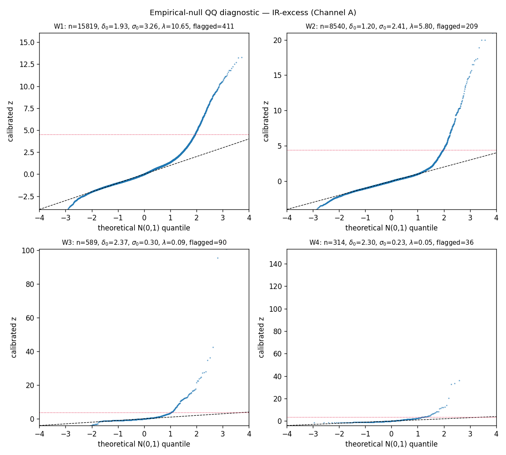
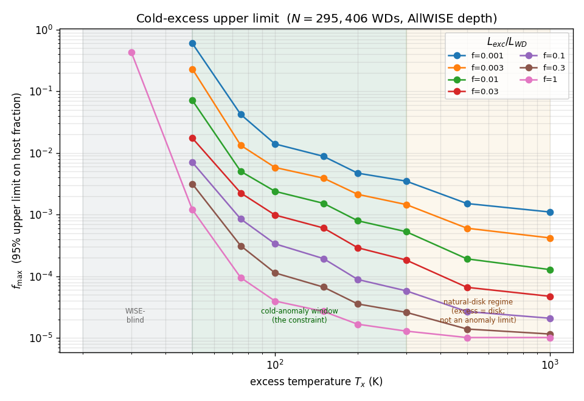
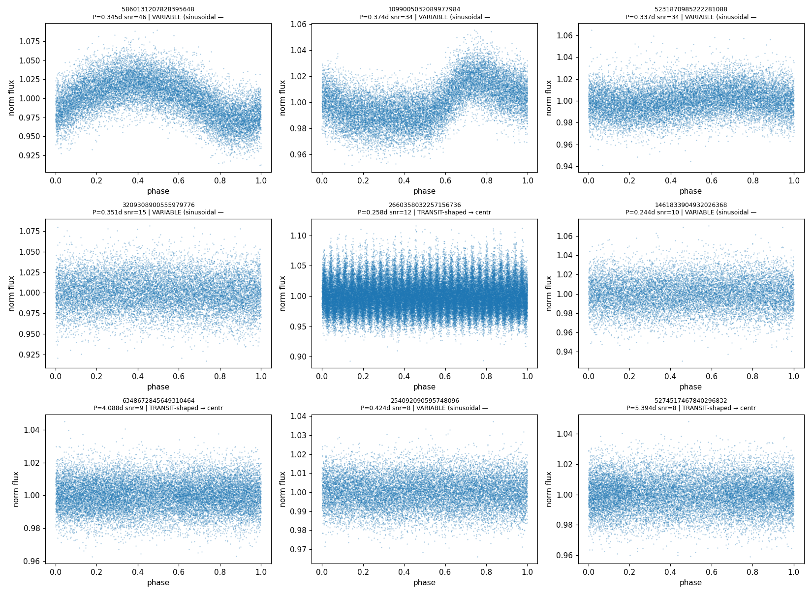
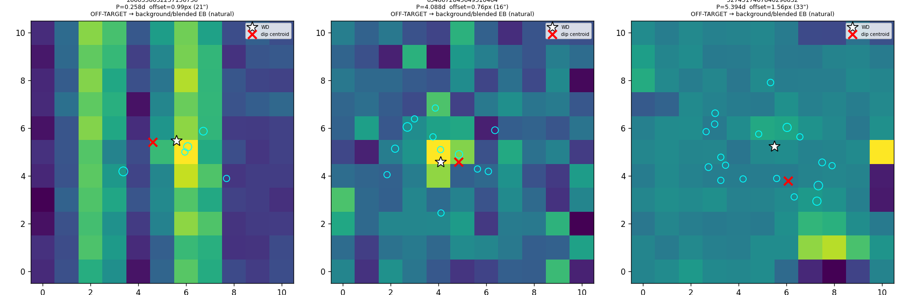
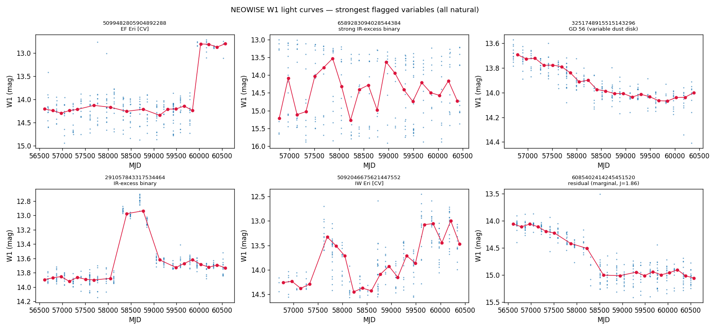
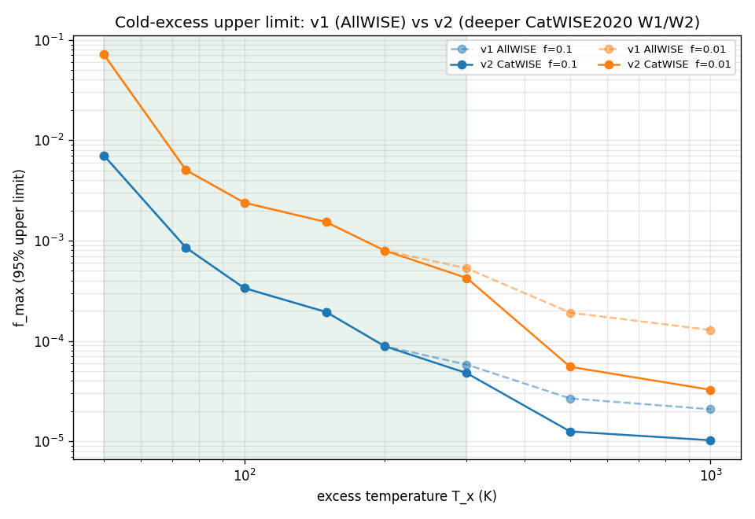

Tonio Loewald¹ (corresponding; human author of record)
¹ Independent researcher. Contact: tloewald [at] gmail.com
Draft for expert review — not yet submitted. This work was carried out as an openly documented human–AI collaboration; see §10 (Provenance) and the public repository. The analysis plan was pre-registered on the Open Science Framework before any data were examined (OSF DOI 10.17605/OSF.IO/6YH7R).
We present a pre-registered, mechanism-agnostic search for anomalous infrared and photometric signatures around white dwarfs (WDs). Rather than assume a particular engineered structure, we define the search target as the observable anomaly itself: a departure from the natural cooling-remnant-plus-debris model that survives a fixed battery of natural-explanation tests. Working from the Gaia EDR3 white-dwarf catalogue of Gentile Fusillo et al. (2021; 359,073 objects at P_WD > 0.75), we run three pre-registered channels: (A) a calibrated infrared-excess and time-variability search using AllWISE and NEOWISE; (B) a transit-morphology search with TESS; and (C) an accretion-state (“clean inner zone”) corroborating flag using SDSS spectral classifications. Detection thresholds are set by a genomics-style empirical null with genomic-control inflation, not by inspecting candidates. The pipeline reproduces known astrophysics — it recovers ~536 WD debris disks/companions (median dust temperature ≈ 511 K), the transiting giant planet WD 1856+534 b, the variable-dust-disk WD GD 56, and a population of cataclysmic variables — which licenses interpretation of its non-detections. We find no unexplained anomaly in any channel: every flagged candidate resolves to a concrete natural cause — Galactic cirrus, marginal detections, accreting binaries, or stellar variability — and every transit-shaped candidate resolves to a background eclipsing binary once constrained by difference-image centroiding (a 16–33 arcsecond offset from the white dwarf in TESS’s 21 arcsecond pixels). For cold (~50–300 K) infrared excesses we place a zero-detection upper limit of f_max ≈ 10⁻³–10⁻⁴ on the fraction of (predominantly solar-neighbourhood) WDs hosting such an excess (fewer than one in a thousand to one in ten thousand), and show this limit is robust to the photospheric-atmosphere assumption. A pre-registered extension deepening W1/W2 by 5.4× (CatWISE2020) leaves the cold limit unchanged, confirming it is set by the longer (12–22 µm) bands and that far-infrared data are required to improve it. We release the full reproducible pipeline as a general-purpose tool for principled anomaly assessment of white-dwarf observations.
Key words: white dwarfs — circumstellar matter — infrared: stars — methods: statistical — astrobiology — techniques: photometric
Searches for technosignatures have historically been organised around specific assumed mechanisms — most prominently the Dyson sphere and its waste-heat infrared signature. Such searches are powerful where the assumption holds and blind where it does not: they presuppose both the engineering and the motivation of an unknown agent. A civilization persisting over astrophysical timescales need not optimise for thermodynamic efficiency, build megastructures we would recognise, or emit in channels we happen to model. Anchoring a search to one mechanism therefore risks measuring our own assumptions rather than the sky.
We take the opposite stance. The object of this search is not a hypothesised structure but an observable anomaly: a persistent or time-varying departure from the natural white-dwarf model that we cannot explain away. White dwarfs are attractive targets for a mechanism-agnostic search precisely because their natural behaviour is unusually well-understood — a cooling blackbody photosphere, occasionally accompanied by a tidally disrupted debris disk and metal pollution — so departures are comparatively clean to define and to test. Crucially, our deliverable does not depend on a positive detection: a rigorously defended null is itself a measurement (a quantitative ceiling on anomaly prevalence), and the machinery built to obtain it is a reusable instrument.
The central methodological risk in any anomaly search is post-hoc reasoning — the “god of the gaps” failure in which unexplained silently becomes the current limit of our models, and thresholds drift to admit a favoured candidate. We guard against this in two ways. First, the entire analysis plan — sample, channels, statistics, natural-explanation battery, and stopping rule — was pre-registered on the Open Science Framework before any data were examined, via an unmoderated Open-Ended Registration that is permanent and tamper-evident. Second, we adopt a strict integrity invariant: procedures and thresholds are specified independently of the findings and are never tuned to include or exclude particular objects. Detection thresholds come from an empirical null and injection–recovery, not from inspecting the candidate list.
This paper reports the first end-to-end execution of that registered plan on real archival data. §2 describes the sample and data. §3 gives the methods for the three channels and the statistical framework. §4 reports the validation and the channel-by-channel results, including a quantitative upper limit and a set of robustness checks. §5 discusses interpretation and limitations, and §6 concludes. All code, queries, and the full human–AI working transcript are public (§9–§10).
Parent sample. We adopt the Gaia EDR3 white-dwarf catalogue of Gentile Fusillo et al. (2021) and select the 359,073 sources with white-dwarf probability P_WD > 0.75, the catalogue’s high-confidence threshold. We deliberately apply no distance cut: a WD is not excluded merely for being far away. The data-sufficiency requirements (a usable optical/near-IR SED; at least one informative infrared band) nonetheless preferentially admit nearby, bright, and/or hot WDs — a Malmquist-type bias toward the local volume that we treat statistically (§3.5) and flag explicitly in interpreting the upper limit (§5). Pure-hydrogen effective temperatures and surface gravities are available for 295,406 objects (median T_eff ≈ 10,900 K).
Photometry and spectroscopy. Optical photometry (Gaia G, G_BP,
G_RP) is taken from the same catalogue. Mid-infrared photometry is obtained from
AllWISE (Cutri et al. 2013) via the Gaia archive’s precomputed, source_id-keyed
cross-match (deterministic, not fuzzy positional matching): 16,924 WDs (4.7%) have an
AllWISE counterpart, with per-band detections W1 16,897 / W2 9,081 / W3 650 / W4 339.
This AllWISE baseline is subsequently deepened in W1/W2 by the CatWISE2020 catalogue
(Marocco et al. 2021), in a pre-registered extension (§4.7) that tests the warm-excess limits.
Multi-epoch infrared light curves come from NEOWISE-R (Mainzer et al. 2011) single-exposure
photometry, retrieved by bulk positional cross-match on the IRSA TAP service. Time-series
optical photometry comes from TESS (Ricker et al. 2015) via MAST. Spectral classifications
for the accretion-state channel are taken from the same pinned Gentile Fusillo et al.
(2021) release — its sdssspec.dat table of SDSS DR16 visual classifications (41,820
spectra of 32,169 unique WDs). Synthetic photospheric photometry uses the Montreal
(Bergeron/Bédard et al. 2020) DA and DB model-atmosphere grids.
Reproducibility. No survey data are stored in the repository. Instead we store a deterministic recipe: pinned dataset releases, exact query text, frozen target-identifier manifests, and SHA-256 checksums; bulk products are fetched on demand and verified against the committed checksums. All data work post-dates the OSF registration; the registered version is tagged in the public Git history.
Identifier integrity (a data-handling caution for Gaia-based pipelines). We flag a
silent data-corruption hazard that we encountered and that we believe is broadly relevant to
anyone building a Python/pandas pipeline against the Gaia archive. A 19-digit Gaia
source_id exceeds the exact-integer range of IEEE-754 double precision (2⁵³ ≈ 9×10¹⁵).
pandas will silently cast an integer column to floating point whenever it is combined with
floats in an all-numeric context (for example, when a row is materialised by
DataFrame.iterrows), which truncates the trailing digits and can map several distinct stars
onto a single corrupted identifier. The failure is invisible — it raises no error and
produces only quietly wrong cross-matches. In an intermediate step of this work it corrupted
99 of 157 identifiers before we caught it, via a routine “do all flagged candidates trace
back to the parent sample?” sanity check; because the corruption affected only the labels
and never the coordinate-based measurements, repair was exact and a full re-run reproduced
every science result identically. Two practical rules prevent it: (i) carry Gaia
identifiers as strings (or explicit 64-bit integers) throughout, and never allow them to be
coerced to floating point; and (ii) when uploading identifiers to VOTable/TAP services —
which reject unicode-string columns — send them as 64-bit integers, which round-trip exactly.
We state this prominently rather than as a footnote precisely because the error is silent: a
replicator who reuses naïve identifier handling would inherit corrupted cross-matches with no
warning.
For every candidate, the question asked is not “could this be artificial?” but “can we explain this naturally?”. An object is a residual only if it survives a fixed battery of natural-explanation tests at procedure-frozen thresholds. The battery spans: photospheric mismodelling; debris disks (Jura 2003) and substellar/stellar companions; Galactic cirrus and background contamination; detection reliability; eclipsing-binary and ringed-planet transit geometries (Arnold 2005); stellar pulsation and instrumental systematics; disintegrating planetesimals; background eclipsing binaries / aperture blends; and, for the accretion channel, natural dynamical clearing and sensitivity effects. The stopping rule is pre-committed: “unexplained” means “survives the registered battery,” nothing more, and the full ranked residual list is reported rather than a hand-picked top.
For each WD we predict the photospheric W1–W4 flux from the DA atmosphere grid evaluated at the catalogue (T_eff,H, log g_H), anchored on the observed Gaia G via the distance-independent model colour (W_n - G_3). In the WISE bands the photosphere lies on the Rayleigh–Jeans tail, so its predicted flux is stiff and low-uncertainty. The per-band excess significance is χ_n = (f_n,obs - f_n,pred) / σ_n, computed only where AllWISE reports a real detection.
For sources detected in the cooler W3/W4 bands — where the photosphere is negligible, so any detection is a genuine excess — we fit a free-temperature blackbody (temperature T_x and solid angle both free) to the excess SED. An excess whose T_x falls in a natural regime (debris disk, ~300–1500 K; cool/substellar companion, ~1500–4000 K) is classified natural; a cold excess (T_x < 300 K) or one with no acceptable fit is a residual to vet further through the cirrus and reliability filters.
A fluctuating excess is the highest-value signature: a static disk cannot fake it. From NEOWISE-R we build W1/W2 light curves and compute, per source, the reduced χ² (amplitude) and the Stetson (1996) J index (correlated two-band variability — robust to single-band noise). Both are calibrated against an empirical null (§3.5). We initially ran this on the IR-excess set; following review we re-ran it on a brightness-limited sample — all AllWISE WDs reaching the NEOWISE single-exposure detection floor (W1 < 15.5), regardless of excess — so that transient or sporadic events on otherwise-bare WDs are not missed (§4.4).
Channel B (transits). TESS is photon-starved on faint WDs, so this channel is registered as secondary and candidate-generating and is run on the bright subset (G < 14). We run Box Least Squares (Kovács et al. 2002) on each SPOC/TESS-SPOC/QLP light curve and assess morphology (duty cycle; sinusoid-versus-box). Any transit-shaped candidate is then subjected to the mandatory difference-image centroid (BEB) test: TESS pixels are ~21″, so the flux dip must be localised to the WD’s coordinates, not an offset background source.
Channel C (clean inner zone). Polluted (actively accreting) WDs are identified as SDSS classes containing ‘Z’ (Ca H&K metal lines). “Accreting but no detectable inner dust” is common and natural, so Channel C is registered as an ordinal corroborating flag with no standalone threshold: a clean inner zone elevates an object only when it coincides with a Channel-A or -B survivor.
White-dwarf photospheric prediction carries scatter that the formal photometric errors underestimate. We therefore calibrate thresholds against an empirical null (Efron 2004): the bulk of the test-statistic distribution defines the null, and a genomic-control inflation factor λ (Devlin & Roeder 1999) rescales it. We measure λ ≈ 10.6 in W1 — i.e. the textbook errors understate the true scatter roughly threefold — which validates the empirical-null approach: using formal errors would manufacture thousands of false flags. Multiplicity is controlled with the Benjamini–Hochberg/Storey false-discovery rate, and the staged look-elsewhere effect (Gross & Vitells 2010) is carried through to the detection bar (cf. the 7.1σ Kepler threshold; Jenkins et al. 2002). The channels are kept separate: we deliberately avoid a single tunable weighted scalar in which arbitrary weights could creep in.

With zero unexplained excesses, we compute the registered zero-detection bound f_max(T_x, f) = 3.0 / Σ_i C_i(T_x, f) (95% one-sided), where C_i is unity if an excess of temperature T_x carrying a bolometric-luminosity fraction f around WD i would have exceeded the AllWISE 5σ depth in some band (survey-depth injection– recovery), and the sum runs over all 295,406 WDs with a usable photosphere — the non-detected majority included.
Fitting blackbodies to the 923 W3/W4-excess SEDs yields, for the 705 with ≥ 2 excess bands, 536 natural sources — 426 warm debris disks plus 110 cool/substellar companions — with median T_x ≈ 511 K, exactly the textbook white-dwarf debris-disk regime. The transit machinery recovers the known transiting giant planet WD 1856+534 b at P = 1.4080 d (truth 1.4079 d). The variability search recovers the textbook variable-dust- disk WD GD 56 and a population of cataclysmic variables. The accretion channel reproduces the literature’s small WD dust-disk fraction (a few percent). A pipeline that demonstrably finds what it should is the precondition for trusting its non-detections.
104 objects fit a cold (T_x < 300 K) blackbody — the potentially interesting regime. Each was passed through the registered battery: 7 fail contamination flags; 85 fail W3/W4 detection reliability (marginal/low-S/N); and the remaining 12 all lie in high-cirrus fields (SFD E(B-V) 0.30–1.22, every one well above any plausible ceiling, so the conclusion is threshold-independent). Zero survive. Channel A’s static-excess branch finds no unexplained infrared excess at any temperature, while correctly recovering the known debris-disk population — a null reached by explanation, not assertion.
The resulting upper limit (Figure 2) has three regimes. Below ~50 K the search is WISE-blind (the reddest band is 22 µm). In the 50–300 K cold-anomaly window, where a cold excess is both WISE-detectable and distinguishable from a warm disk, with zero unexplained excesses we obtain f_max ≈ few×10⁻³ to 10⁻⁴; e.g. at T_x = 100 K reprocessing 10% of the WD’s light (f = 0.1), f_max ≈ 3×10⁻⁴. Above 300 K any excess is classified as a natural disk, so the tight numbers there are a generic IR-excess limit, not an anomaly limit. In plain terms: fewer than one in a thousand to one in ten thousand (predominantly solar-neighbourhood) white dwarfs host an unexplained cold (50–300 K) infrared excess, with the colder regime beyond WISE’s reach.

Of the 157 bright (G < 14) WDs, 136 have usable TESS light curves. The strongest periodic signals are stellar variability, not transits: of the top nine by BLS signal-to-noise, six are smooth sinusoidal modulations (ellipsoidal/reflection/pulsation), most already catalogued (e.g. the known WD+dM pair HZ 43, the planetary-nebula central star SH 2-216). Three signals are genuinely transit-shaped but shallow (0.7–1.2%); since a planet transiting an Earth-sized white dwarf would produce a deep or total eclipse, a ~1% dip cannot be a transit of the WD. The mandatory difference-image centroid test confirms this: all three flux-dip centroids are offset from the white dwarf by 0.76–1.56 px (16–33″), toward field neighbours — they are background/blended eclipsing binaries. Channel B is a clean, fully-vetted null.


The initial variability search (540 WDs with ≥ 10 epochs) flagged 17 variables, all natural (disk variability or brown-dwarf weather). Because that search required a static excess to trigger — a selection bias blind to transient events on bare WDs — we re-ran it on the brightness-limited sample: 271,520 clean epochs for 861 WDs. The empirical null self-recalibrates (reduced-χ² δ_0 = 1.75; bright-source NEOWISE errors are mildly underestimated), and 35 WDs pass the correlated-variability threshold. Vetting each by SDSS class, SIMBAD type, Gaia-neighbour blend in the ~6″ NEOWISE beam, and IR excess: 28 are natural — cataclysmic variables (EF Eri, IW Eri, BW Scl, …), aperture blends, and IR-excess systems (unresolved companions or variable dust disks, including GD 56); 7 are residual, all low-significance (Stetson J ≤ 1.9), isolated, and without IR excess — consistent with the empirical-null statistical tail and instrumental systematics (some are ROSAT X-ray WDs, hence likely magnetic/accreting). No anomalous fluctuating bare WD. Removing the selection bias leaves the highest-value-signal null intact (Figure 5).

We identify 894 unique metal-polluted (Z-class) WDs in the sample. Of the 112 with AllWISE coverage, 5 (4.5%) are disk-bearing and 107 (95.5%) have a clean inner zone — consistent with the literature’s small disk fraction (the WISE-covered polluted subset is bright/nearby-biased). With zero Channel-A residual survivors and zero Channel-B on-target survivors, the clean-zone set coincides with the A∪B survivors in zero objects. Channel C therefore elevates nothing — exactly as its corroborating-only registration anticipates — while leaving a characterised polluted-WD / clean-zone catalogue as a byproduct.
Photospheric atmosphere. The pipeline uses a DA (pure-H) grid for all WDs. Re-predicting the 25 spectroscopically helium-atmosphere W3/W4-excess WDs with the DB grid at the catalogue’s (T_eff,He, log g_He) shifts predicted W1/W2 by only ~0.06 mag; in W3/W4 — where the cold candidates are defined — the predicted photosphere is <0.6% of the observed flux under both DA and DB, so the cold classification is photosphere-model-independent. For the upper limit, excluding the spectroscopically-confirmed non-DA WDs (~1.6% of the sample) leaves f_max unchanged (3.4×10⁻⁴ at T_x = 100 K, f = 0.1, versus 3.4×10⁻⁴ for the full sample); a confirmed-DA-only limit is weaker only because N is ~18× smaller, not because the physics shifts. The cold null and the limit are robust to the atmosphere assumption.
(A separate, software-level identifier-integrity hazard and its fix are described in §2 under Identifier integrity, where they belong — they concern data handling, not the statistical robustness of the result.)
Following external review, we executed a pre-registered amendment (frozen before the deeper data were examined) deepening the W1/W2 excess search and the warm-regime upper limit with CatWISE2020 (Marocco et al. 2021), which reaches ~1.4–1.75 mag deeper than AllWISE in W1/W2. The cross-match yields 91,197 WDs with W1/W2 — 5.4× the AllWISE sample, 75,060 of them new — with W2 reaching ~20.5 mag. The deeper, cooler sample’s scatter relative to the formal errors is even larger (genomic-control λ ≈ 19 in W1, 29 in W2, versus 10.6 in v1, as source confusion, blending, and background fluctuations dominate the formal photometric errors at these fainter unWISE-coadd limits — regimes the Poisson/read-noise error model does not capture), re-confirming the necessity of the empirical-null calibration rather than indicating any breakdown of the atmospheric models.
The outcome matches the pre-registered predictions exactly. Requiring W1+W2 corroboration (a real excess must appear in both bands — W1 cross-calibrates cleanly to AllWISE while W2 carries a small catalogue offset the per-band empirical null absorbs), the deeper search yields 866 robust excesses, all warm by construction — the Wien tail of a cold 50–300 K anomaly is too faint to trigger a detection at 3.4/4.6 µm without W3/W4 corroboration — dominated by known disks, spectroscopic binaries, and cataclysmic variables, with the remainder warm debris-disk/companion candidates. The deeper W1/W2 thus extends the warm-excess census but, by wavelength, cannot surface a cold-anomaly candidate. Recomputing f_max with the deeper W1/W2 depths (W3/W4 unchanged; Figure 6) leaves the 50–300 K cold-anomaly window unchanged (1.0–1.2×) and tightens only the >300 K natural-disk regime (~2×). This confirms with data that the headline cold limit is W3/W4-limited, and that far-infrared facilities (JWST/Herschel) — not deeper WISE-band photometry — are the only route to improving it.

A defended null is a measurement. Every channel returns a null, and in every case the null is reached by chasing each candidate to a concrete natural cause — Galactic cirrus in the WISE beam, a marginal detection, a background eclipsing binary localised off-target by difference imaging, an accreting binary, or known stellar variability — rather than by asserting that anomalies are noise. The quantitative product is the cold-excess ceiling, f_max ≈ 10⁻³–10⁻⁴ over 50–300 K, which we have shown is insensitive to the atmosphere assumption and is set by survey depth over the whole photosphere sample rather than by the detected subset alone.
Scope and limitations. (i) The limit constrains prevalence among the effectively probed, neighbourhood-weighted population, not the full Galactic WD census; beyond geometry, the local sample may also differ physically (local ISM, recent cloud passages affecting accretion, age gradients), which we flag as a caveat on the natural baseline itself. (ii) the v1 excess search used AllWISE detections only; the deeper CatWISE2020 extension (§4.7) has now addressed this, finding that deeper W1/W2 extends the warm-excess census but leaves the cold limit unchanged — so the binding limitation is wavelength, not depth. (iii) WISE cannot see genuinely cold (≲50 K) excess; that regime requires far-infrared data (Herschel, JWST/MIRI) and is honestly outside our reach. (iv) Channel B is secondary and bright-limited; a calibrated, fainter, all-sector transit search is a natural extension. (v) Most fundamentally, the search is a defined, falsifiable slice: a disequilibrium expressed only through channels we do not survey (e.g. narrow-band, polarimetric, or radio signatures, or signatures that look like noise to current models) is invisible to it. We claim no completeness — only a concrete, reproducible constraint.
The instrument outlasts the result. Independent of the technosignature framing, this work yields a reusable white-dwarf inspection pipeline: calibrated SED-excess testing against an empirical null with genomic-control inflation, free-temperature blackbody fitting, two-band correlated-variability detection, BLS plus difference-image centroiding, and cirrus vetting — applicable to any current or future white-dwarf data release for principled anomaly assessment — together with byproduct catalogues of debris disks, variable disks, and polluted/clean-inner-zone systems.
A pre-registered, mechanism-agnostic, three-channel search of 359,073 Gaia EDR3 white dwarfs finds no unexplained thermal or photometric anomaly. The pipeline validates against known astrophysics (debris disks at 511 K, WD 1856+534 b, GD 56, cataclysmic variables) and then returns clean, explained nulls in static infrared excess, time variability (including the previously-omitted bare-WD population), transit morphology, and accretion state. We place a quantitative, atmosphere-robust ceiling of f_max ≈ 10⁻³–10⁻⁴ on the fraction of solar-neighbourhood white dwarfs hosting an unexplained 50–300 K infrared excess. We release the registered plan, the reproducible pipeline, and the complete working record, and we invite the community to second-guess the null at their leisure.
The complete pipeline, query recipes, frozen manifests, checksums, figures, this manuscript, and the full human–AI working transcript are public at the project repository. Bulk survey data are not redistributed; they are fetched deterministically from their archival sources (Gaia, IRSA/AllWISE, IRSA/NEOWISE, MAST/TESS, VizieR) per the committed recipe. The analysis plan is permanently registered on OSF (DOI 10.17605/OSF.IO/6YH7R); the registered code version is tagged in the Git history.
This research used the Gaia mission archive (ESA), the NASA/IPAC Infrared Science Archive (AllWISE, NEOWISE), the Barbara A. Mikulski Archive for Space Telescopes (TESS), the VizieR and SIMBAD services (CDS, Strasbourg), and the Montreal White Dwarf Database model grids. We thank the white-dwarf and exoplanet communities whose catalogues make a search like this possible.
The human author is accountable for the scientific content, the integrity of the pre-registration, and all claims herein. Draft status: this manuscript is circulated for expert review prior to submission; quantitative results are reproducible from the public pipeline at the tagged commit. Reviewers are specifically invited to scrutinise the empirical- null calibration, the cirrus and centroid vetting, the upper-limit construction, and the local-environment caveats on the natural baseline.
In the spirit of radical transparency, we record that this project was executed as an openly-documented collaboration between the human author and two AI systems (Google Gemini and Anthropic Claude), which contributed to methodology design, implementation, and adversarial review. The human author retains full accountability for every claim; the AI systems are credited as co-designers, and the complete, lightly-redacted working transcripts are archived in the public repository. The first-pass results were additionally subjected to an independent AI critical review, whose substantive points (a float64 identifier hazard, the DA-atmosphere assumption, and a variability selection bias) are addressed in §4.4 and §4.6.